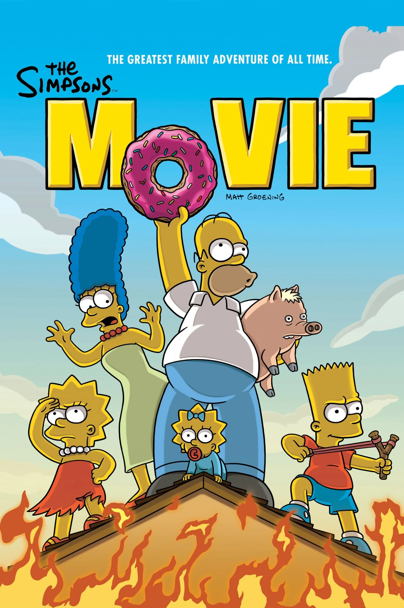

Les Simpson (The Simpsons) sont une série télévisée d'animation américaine créée par Matt Groening et diffusée pour la première fois à partir du 17 décembre 1989 sur le réseau Fox. Elle met en scène les Simpson, stéréotype d'une famille de classe moyenne américaine. Leurs aventures servent une satire du mode de vie américain. Les membres de la famille sont Homer, Marge, Bart, Lisa, Maggie. Depuis ses débuts, la série a récolté des dizaines de récompenses, dont trente-deux Primetime Emmy Awards, trente Annie Awards et un Peabody Award. Le Time Magazine du 31 décembre 1999 l'a désignée comme la meilleure série télévisée du XXe siècle et elle a obtenu une étoile sur le Hollywood Walk of Fame le 14 janvier 2000. « D'oh! », l'expression d'abattement d'Homer Simpson, est entrée dans la langue anglaise. Ce n'est pas le seul mot à être entré dans le dictionnaire anglais, embiggen (« engrandi » en français) est un mot inventé par les Simpson qui est aussi entré dans la langue anglaise. L'influence des Simpson s'exerce également sur d'autres sitcoms. En 2007, Les Simpson, le film, un long métrage basé sur la série, est sorti au cinéma et a recueilli 527 millions de dollars américains en recettes brutes (pour un budget de 75 millions). Les Simpson (The Simpsons) sont une série télévisée d'animation américaine créée par Matt Groening et diffusée pour la première fois à partir du 17 décembre 1989 sur le réseau Fox. Elle met en scène les Simpson, stéréotype d'une famille de classe moyenne américaine. Leurs aventures servent une satire du mode de vie américain. Les membres de la famille sont Homer, Marge, Bart, Lisa, Maggie. Depuis ses débuts, la série a récolté des dizaines de récompenses, dont trente-deux Primetime Emmy Awards, trente Annie Awards et un Peabody Award. Le Time Magazine du 31 décembre 1999 l'a désignée comme la meilleure série télévisée du XXe siècle et elle a obtenu une étoile sur le Hollywood Walk of Fame le 14 janvier 2000. « D'oh! », l'expression d'abattement d'Homer Simpson, est entrée dans la langue anglaise.
Les Simpsons
